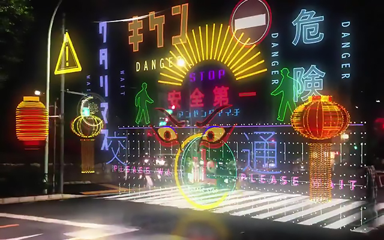

As smart cities develop, a growing network of interconnected devices known as the Internet of Things (IoT),
is transforming the current landscape as we know it. These technological advances are reshaping how cities
operate and how people interact in their day-to-day lives.

In the day of tomorrow, nearly every object becomes a point of data. Pedestrian crossings track foot
traffic, public transport adapts to rider patterns and home devices manage and adjust to temperature,
energy usage, security and human health.
Through the use of real-time data, smart cities can improve the power of technology, improve urban
infrastructure and enhance public services. As technology advances, it will pave a way for a connected
future and higher quality of life for citizens.
References
1. McLaughlin K 2023, The 6 Most Futuristic Cities Being Built Around the World, viewed 2nd August 2025, https://www.architecturaldigest.com/gallery/futuristic-cities-concept-roundup
2. Giimann 2018, Future City HD 20, viewed 2nd August 2025, https://giimann.artstation.com/projects/9eEJbQ
3. Madden D 2018, The Future Of Seven Great Cities Spectacularly Reimagined, viewed 2nd August 2025, https://www.forbes.com/sites/duncanmadden/2018/06/30/the-future-of-seven-great-cities-spectacularly-reimagined/
4. Albert M (n.a.), Smart city technology coming to futuristic cities, viewed 2nd August 2025, https://www.mikealbert.com/fleet-studies-lab/smart-cities/smart-city-technology-coming-to-futuristic-cities
5. Studio L (n.a.), Metro train of the future, viewed 2nd August 2025, https://ifdesign.com/en/winner-ranking/project/metro-train-of-the-future/347877
6. grape Japan 2019, Motion Graphic Designer Takayuki Yoshida Imagines Cyberpunk Crosswalk [Video], viewed 2nd August 2025, https://grapeejapan.com/117041
7. 3BL 2016, The Future of Mobility - the Mercedes-Benz Future Bus, viewed 2nd August 2025, https://www.3blmedia.com/news/future-mobility-mercedes-benz-future-bus
8. Bersola C 2024, cdf Haikou International Duty Free Shopping Complex elevates May Day holiday shopping experience, viewed 2nd August 2025, https://moodiedavittreport.com/cdf-haikou-international-duty-free-shopping-complex-elevates-shopping-experience-this-may-day-holiday/
9. Templeton 2022, The Future of Tech: Industry Insights from Global Tech Leaders, viewed 2nd August 2025, https://www.templeton-recruitment.com/tech-news/the-future-of-tech-industry-insights-from-global-tech-leaders